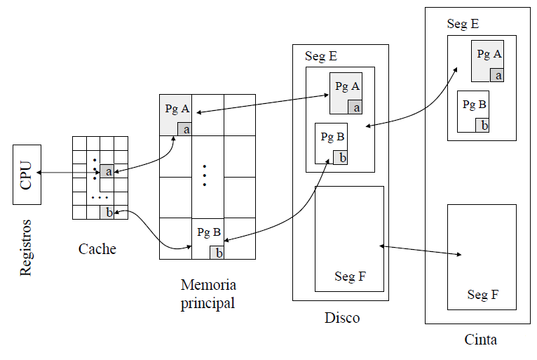

Buscar ayuda sobre
Cache fue el término escogido para representar el nivel de la jerarquía de memorias entre la CPU y la memoria principal en el primer computador que tuvo ese nivel extra.
Cuando un procesador necesita obtener un dato que no se encuentra en sus registros, tratará de acceder a la memoria cache, y en el caso de que no se encuentre en la misma se accederá a los niveles superiores de la jerarquía .

El primer problema que surge es saber cómo se determina si un dato está o no en cache. Para determinar si una palabra de la cache se corresponde con la palabra pedida se utilizan las etiquetas. Las etiquetas contienen la información de la dirección requerida para identificar si una palabra de la cache corresponde a la palabra pedida. La etiqueta puede estar formada sólo por la parte alta de la dirección, correspondiente a los bits que no se usan para indexar la cache.